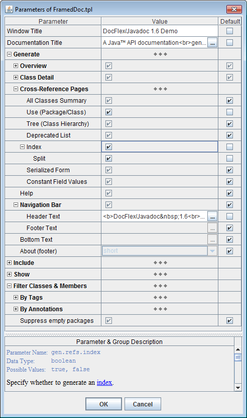
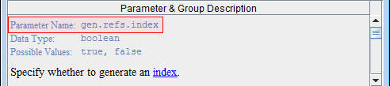
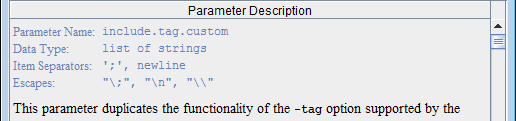

-docletpath
<doclet_class_path>
-doclet
com.docflex.javadoc.Doclet
If you are not sure what that means, here is the full Javadoc command line:
All arguments are explained in this table:
javadoc[VM options] -docletpath <doclet_class_path> -doclet <doclet_class> [options] [packagenames] [sourcefilenames] [-subpackages pkg1:pkg2:...]
| Command/Arg | Explanation | |
|---|---|---|
javadoc
|
A system command that starts Javadoc.
On Windows, that command may look like the following:
(Just do not forget to enclose it in double quotes, when the pathname contains spaces!) |
|
[VM options]
|
The options passed to JVM that runs Javadoc.
When you generate documentation for a big project, it is important to ensure that JVM will allocate enough memory for the heap (otherwise, the generator will slow down and may run out of memory). The maximum heap size should be specified here using -J-Xmx option. For example, setting -J-Xmx256m will allocate 256 Mb for the heap.
|
|
-docletpath
|
The Javadoc
-docletpath
option to specify the path to the doclet starting class file.
|
|
<doclet_class_path>
|
This must be the pathname of the DocFlex/Javadoc Java library file.
On Windows platform, it should look like the following:
or
where
Notes:
|
|
-doclet
|
The Javadoc
-doclet
option to specify the fully-qualified name of the doclet starting class.
|
|
<doclet_class>
|
The qualified name of the DocFlex Doclet starting class:
(the same for all editions)
|
|
[options]
|
All other Javadoc options. This includes both the Javadoc core options and the options processed by the DocFlex Doclet (see below). | |
[packagenames]
|
Specify the Java packages and classes to document.
For further explanations, please see Javadoc Reference Guide, e.g. by this link: http://docs.oracle.com/javase/6/docs/technotes/tools/windows/javadoc.html#referenceguide |
|
-config -d -docflexconfig -errlog -f |
-format -launchviewer -license -link -linkoffline |
-nodialog -o -p -quiet -template |
The number of options is relatively small for two reasons:
Here are the option details grouped by category:
or
-p:<parameter> <value>"true" and
"false" strings (for example:
-p:include.deprecated=true).
-p:title "My Docs").
The two argument variant is necessary for compatibility with
Apache Ant.
Ant provides a special doclet <param> element with two attributes:
name and value.
When everything goes into the name attribute and the actual
value contains spaces, Ant won't process it correctly.
|
or
-o:<option> <value>"true"
and "false" strings (for example:
-o:rtf.storeGraphicsInRTF=false).
The two argument variant is necessary for compatibility with
Apache Ant.
Ant provides a special doclet <param> element with two attributes:
name and value.
When everything goes into the name attribute and the actual option
value contains spaces, Ant won't process it correctly.
|
The documentation files are distributed in the following way:
This makes the whole documentation to look as to consist of only two file entities, which may be easier to distribute yet during the generation, especially when different types of documentation are produced from the same Java sources (e.g. by different templates or with the different parameters).
-template PlainDoc.tpl -format RTF -d c:\outc:\out\PlainDoc.rtf with the associated files
subdirectory c:\out\PlainDoc_files\ (if any)-template PlainDoc.tpl -format HTML -d c:\out -f OpenAPIc:\out\OpenAPI.html with the associated files
subdirectory c:\out\OpenAPI_files\ (if any)-template FramedDoc.tpl -format HTML -d c:\outc:\out\
with the main file index.html-template FramedDoc.tpl -format HTML -d c:\out -f OpenAPIc:\out\OpenAPI.html
and all other files located in the directory c:\out\OpenAPI_files\Typically, it should be used to specify a pure name associated with the generated documentation (for example, 'DocletAPI'). However, the pathname may also be used. In that case, it is interpreted against the initial destination directory (specified with the -d option) and may override it. If the pathname is the absolute one, the -d option is effectively ignored.
Precisely, this command is specified in docflex.config
file found near docflex-javadoc.jar (or docflex-doclet.jar) file in the
lib directory.
-launchviewer-launchviewer=falseThe Generator Dialog also uses this file to store all options and parameters specified interactively. If the config file does not exist, the Generator Dialog will try to create it by the provided pathname.
By default, the location of the generator configuration file is specified in the
docflex.config
(located in lib directory).
If no other config file is provided, it is automatically loaded from that location (if found).
See also: Handling Template Parameters | Using Doclet GUI to prepare parameters for command line
'docflex.config' which is searched in the directory where
the DocFlex Java library file 'docflex-javadoc.jar'
(or docflex-doclet.jar) is located.
If not found, docflex.config
is created automatically with default settings.
You may need this option when you use the full edition of DocFlex/Javadoc and your license allows you to execute your templates only in its presence. At that, the way how the license is searched by default does not fit to you (see Documentation | Configuration Files | docflex.license).
Note: The license directly specified with this option on the command line will override
any other licenses (e.g. assigned in docflex.config
or found near docflex-javadoc.jar).
This option will work the same as the -link option supported by the Standard Doclet.
Precisely, the processing of both -link and -linkoffline options
is programmed within the templates using a Javadoc-specific
FlexQuery function:
getExternalDocURL().
When DocFlex/Doclet meets either -link or
-linkoffline option on the Javadoc command line, it processes such an option
so that the content of the package-list file referred from it is loaded into a special internal
hash-table. Further, getExternalDocURL() function uses that table to translate
any Java qualified name into a possible URL of the external documentation.
This option will work the same as the -linkoffline option provided by the Standard Doclet. See also -link option for more details about how it is implemented.
Parameters:
true - if this (or no parameter) is specified, the DocFlex Doclet starts the generation immediately according to the setting specified on the Javadoc command line and loaded from the generator config (see -config option). Then, the doclet exits. false - this is the same as when the -nodialog option was not specified at all. The Generator Dialog will be invoked. quiet - start the generation immediately (without dialog) and suppress displaying most of the generator messages to screen (see also -quiet option). The generation progress counter will be printed.
By default, when an unexpected error/exception occurs during the generation and no GUI is enabled, all details about the error are printed to the standard console.
Using this option, you can assign a separate error log file, into which the detailed ERROR REPORT is dumped each time an error happens. Only brief messages will get on the console in that case. (See also Error Reporting for more details.)
The error log file should be specified as an absolute or relative file pathname.
When the pathname points to a directory, it will be extended with the default
“docflex_error.log” name (for example, setting "-errlog ."
will be interpreted as 'docflex_error.log' file located in the current directory).
If the error log file does not exist, it is created in the event of error. Otherwise, the ERROR REPORT is appended to the existing file. In the case of any I/O error related to the error log file itself, everything will be printed to the console (along with additional the log file error message).
Note: Since Java 5, this option is used by Javadoc itself as one of its core options.
If you want to suppress only DocFlex Doclet
messages but still see the generation progress counter, use
-nodialog=quiet option instead.
If no -nodialog option specified on the Javadoc command line, when the DocFlex Doclet starts, it invokes the following dialog:
The dialog fields are initialized with the option values specified on the command line or loaded from the generator config file (see also -config option).
This field duplicate -template option specified on the generator command line.
The inspector contents is constructed dynamically from the parameter definitions obtained from the given template (the one specified in the “Template” field in the Generator Dialog). The parameter values are displayed and edited according to their types.
The bottom panel displays the description of the selected parameter (which is also obtained from the template). The first line of the description (the white text) shows the internal parameter name. Use this name in the -p option to specify the parameter value on the Javadoc command line.
See also: Handling Template Parameters.
Similar to the template parameters, the “Options” button near the “Output format” combo-box invokes the Format Option Inspector which is specific for the selected output format.
The bottom panel in the inspector dialog displays the description of the selected option. The first line of the description (the highlighted text) shows the internal option name. This name should be used in the -o option to specify the format option value on the generator command line.
The following screenshots show the option inspectors for each supported output format:
The progress bar tracks the generation progress and shows the name of the output file being currently generated. The “Cancel” button can stop the generation at any moment.
Once the generation has finished or cancelled, the Generator Dialog transforms itself back to the initial state. Then, the new settings can be entered and the generation started again. At that, the Java sources information provided by Javadoc via Doclet API remains the same (as Javadoc doesn't care what exactly a particular doclet is doing with it). This allows you during the same session to generate different kinds of documentation by different templates, in different output formats and so on.
When the generation was successful and the “Launch Viewer” check-box selected, the generator will try to launch an external application (e.g. MS Word) to view the produced result. See -launchviewer option for more details about this setting.
See also: Generation Phases
But introducing and checking parameters in templates is much easier than implementing some command-line options controlling a Java code. (In fact, it is writing a parameter description what takes the most time in many cases!) So, there can be a lot more template parameters than in the case of in traditional “command-line options” approach.
For instance, “JavadocPro” template set currently supports more than 70 parameters.
On the following screenshot you can see the Parameter Inspector loaded with the parameters of JavadocPro | FramedDoc.tpl (click to view an expanded form):
The inspector content is constructed dynamically from the parameter definitions found in the given template.
Using Parameter Inspector, you can:
The parameters are organized in groups (which may contain subgroups and so on). A group heading may also be a parameter itself.
Each parameter group may appear in expanded or collapsed state like a tree node. The group states are also saved in the generator.config file to be restored again when the inspector is invoked next time for the same templates. Using inspector popup menu, you can quickly reset all parameters in a group to their default values.
The check-boxes in “Default” column indicate whether the default values of the corresponding parameters are used.
The default value of a parameter is specified in the parameter definition in the template. Alternatively, the default value may be calculated dynamically from the values of other parameters or settings by a special FlexQuery-expression also specified in the parameter definition.
The same parameters in different main templates may have different default values.
When a parameter is specified in the Parameter Inspector, its value is saved in the generator.config file. If the parameter value is NOT found in that file, the default value will be used (or calculated).
The -p option requires the parameter internal name, which you can find in the bottom panel of the Parameter Inspector dialog (when the necessary parameter is selected). For example:
In this case, the -p option would look like the following:
-p:gen.refs.index true
The parameter values specified with
-p options
on the Javadoc command line will override the values of those parameters found in the
generator.config.
Rather than specifying all the template parameters (and other generator settings) directly with command line options, you can use Doclet GUI to prepare a special generator.config file and, then, provide only that file with -config option.
Here is how it works, step by step:
javadoc ... -doclet com.docflex.javadoc.Doclet -nodialog=false -config C:\project\...\myconfig.config ...
That should start the Doclet GUI.
-config C:\project\...\myconfig.config
myconfig.config.
Such options like
-author or
-splitindex
can be mapped to the default values of the corresponding template parameters.
So, by using them you actually specify again some template parameter, implicitly now.
However, it means that whether and which Standard Doclet options are supported depends on a particular template set.
Currently, that functionality is supported only by “JavadocPro” template set. Here you can see which Standard Doclet options can be used with it and on which template parameters they are mapped:
| The primary reason why we needed to process Standard Doclet options was because the recent versions of Maven always emit some of those options no matter is there a custom doclet or not. Although the Javadoc itself does not mandate for a custom doclet to process any Standard Doclet options, without doing something about them, DocFlex Doclet would simply fail now under Maven (because Javadoc requires for any non-core option to be recognized by the doclet). To deal with that problem, since v1.6.0, DocFlex Doclet includes a list of all possible Standard Doclet options (along with their parameter numbers) so as to tell Javadoc that any of such options has been recognized (in case it was fed to the doclet). As a by-product of this, it became possible to read those options within templates and initialize from them the corresponding template parameters. |
List parameters allow you to pass into template the whole vector of different values associated with the same parameter name. This provides a universal mechanism for implementing a user control over how a set of templates processes a certain type of data (or situations) that may come in unlimited number of variations.
| Before this, such functionality was actually emulated with a string parameter, whose value was expected to contain separate items delimited with a special character (e.g. semicolon). That representation was parsed in a template so as to produce from it an array of values that could be used in further processing. For example, so was implemented (before v1.5.6) the processing of exclude.byTags.classes and omit.packageQualifiers.for parameters of the basic template set. |
Now, the parameter inspector also represents the whole value of a list parameter as a concatenation of all value items (represented as strings) delimited with a separator character. However, there is no need any longer to process that string representation within a template. Rather, it will be parsed automatically by the Generator (as well as the parameter inspector ensures its integrity).
Additionally, the list value can be edited as a multi-line text in a special dialog (invoked by the ellipsis button):
At that, when the allowed value item separators include
newline,
all currently used separators will be replaced with it so as to show each value item
on a different line.
When the editing in this dialog is finished, all newline-separators will be
automatically replaced with another available separator suitable for single-line
representation.
You can see all available value item separator characters in the “Parameter Description” window, when the list parameter is selected:
The separators are specified in the template along with the parameter definition.
';' is a separator,
the following value item:
my;odd;tag
can be specified like this:
my\;odd\;tag
If a backslash is not consumed by an escape it will be remained in the text as is.
To make sure that a backslash is not part of some escape, you may add another backslash.
A sequence of two backslashes ("\\") is an escape itself, which represents a single backslash.
This is important because backslashes may be used also in a secondary system of escapes
within value items, which is specific to the given parameter.
When the escapes are recognized, the sequence "\n"
is reserved to encode a newline character.
The encoding of newline may be needed, for instance,
when it is used not as a value item separator, but rather within multi-line content
of value items themselves. In that case, the "\n" escape allows flattening
the entire list value into a single line. This may be particularly important
for specifying the list parameter on the command line (see also below).
Some list parameters can be specified to ignore escapes. This may be needed when backslashes must be frequently used within value items. (For example, the parameter will accept a list of Windows file pathnames.)
All possible escapes related to specifying of the value of a list parameter as a whole can be found in the “Parameter Description” window.
As an example of extensive usage of escapes, see description
of
include.tag.custom
parameter of the basic template set.
For example, suppose you need to pass into a template the list parameter
include.tag.custom
with three value items:
prjtype:a:Project Type:
todo:cmf:To Do:
priority:cmf:Priority
You can do this using a single command line option
(given that ';' is a value item separator):
-p:include.tag.custom "prjtype:a:Project Type:;todo:cmf:To Do:;priority:cmf:Priority"
(The quotes are needed here because the full parameter value contains spaces
and must be treated as a single command-line argument.)
Alternatively, you can pass the same list value using multiple -p options, each one for a separate value item. e.g.:
-p:include.tag.custom "prjtype:a:Project Type:"
-p:include.tag.custom "todo:cmf:To Do:"
-p:include.tag.custom priority:cmf:Priority
You can even combine the two approaches simultaneously:
-p:include.tag.custom "prjtype:a:Project Type:;todo:cmf:To Do:"
-p:include.tag.custom priority:cmf:Priority
Multiple options specifying the same list parameter
can be mixed with other options on command line.
However, the order in which the parameter options follow is important,
because it defines the ordering of the list value items received by the template.
In the estimation phase, the generator quickly passes over all the source data and partially interprets the involved templates. During that, it collects the names and location of all documentation files to be created and all possible hypertarget locations within them. It also makes an estimation of the total generation time in order to graduate the progress.
During the estimation phase, only the message "Scanning data source, please wait..." is displayed on the generator dialog's progress bar (or printed on console). Please note, the estimation phase may take some time! On a huge project (plus a slow computer), it may last several minutes. This does not mean, the generator hangs. Please wait!
During the generation phase, all template components are being fully interpreted and the real output generated. The progress bar is alive and shows what's being generated at the particular moment. Without Doclet GUI, an estimated percent of the finished output will be periodically printed.
When the Generator Dialog is enabled, any error is reported via the error message dialog, like the one shown on the screenshot:
The error dialog shows brief information about the error. When more details are available, a full ERROR REPORT is created and dumped to the system clipboard. You can easily extract it (e.g. under MS Windows, just run Notepad and press Ctrl+V).
The detailed ERROR REPORT includes: